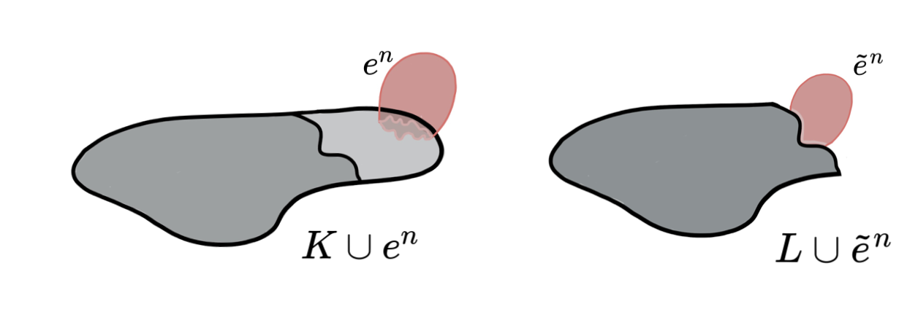

Strong Discrete Morse Theory
XIMENA FERNANDEZ
City St George's University of London
Northeastern Topology Seminar
'Every mathematician has a secret weapon.
Mine is Morse theory.'
Raoul Bott.
Discrete Morse Theory
Discrete Morse Theory
Goal: 'Simplify' the structure of a simplicial complex while preserving its homotopy type.
Let $f\colon K\to \mathbb{R}$ be a function over the simplices of $K$. For every simplex $\sigma\in K$, \[ C(\sigma) := \{\tau \prec \sigma \colon f(\tau) \geq f(\sigma)\} \cup \{\tau \succ \sigma \colon f(\tau) \leq f(\sigma)\} \]
- $f$ is a discrete Morse function if $|C(\sigma)|\leq 1$ for all $\sigma\in K$.
- A simplex $\sigma\in K$ is critical if $|C(\sigma)|=0$.
- $M = \big\{\{\sigma, \tau\} \colon C(\sigma) = \{\tau\}\big\}$ defines a matching. Moreover, $M$ is 'acyclic'.
Discrete Morse Theory
Goal: 'Simplify' the structure of a simplicial complex while preserving its homotopy type.
Theorem [Forman, '98]. Let $K$ be a finite simplicial complex, and let $f\colon K \to \mathbb{R}$ be a discrete Morse function. Then $K$ is homotopy equivalent to a CW-complex, with exactly one cell of dimension $d$ for every critical $d$-simplex of $f$.
Discrete Morse Theory
If $\tau$ is the unique simplex containing $\sigma$ properly in $K$, $\sigma$ is a free face of $\tau$ if . Elementary collapse $K \searrow K\smallsetminus \{\sigma, \tau\}$ (Simple) collapse $K \searrow L$: $K = K_n \ce K_{n-1} \ce \dots \ce K_0 = L$ of elementary collapses from $K$ to $L$.Lemma [Forman, '98]. Let $f\colon K\to \mathbb{R}$ be a discrete Morse function and let $M$ be the induced acyclic matching. Let $\{\bar \sigma_1, \bar \sigma_2, \dots, \bar \sigma_k\}$ be a linear extension of $\Loc_M(K)$.
- If $Q^{-1}(\{\bar \sigma_i, \bar \sigma_{i+1}, \dots, \bar \sigma_j\})$ contains no critical simplices, then $K_{j}\co K_{i-1}$.
- If $Q^{-1}(\{\bar \sigma_i, \bar \sigma_{i+1}, \dots, \bar \sigma_j\})$ contains exactly one critical simplex of dimension $k$, then $K_j\simeq K_{i-1}\cup e^k$, where $e^k$ is a $k$-dimensional cell.
Combinatorial perspective
Collapse Internal collapseCombinatorial perspective Simple homotopy theory Discrete Morse theory
Combinatorial perspective Goal: Understand attaching maps of core(K).
Combinatorial perspective Goal: Understand when attaching maps of core(K) are understandable.
Combinatorial perspective
Strong collapseCombinatorial perspective
Internal Strong collapseCombinatorial perspective Strong homotopy theory Strong Discrete Morse theory
Discrete Morse Theory & Whitehead deformations
Lemma (Internal collapse): Let $K$ be a CW-complex of dimension $\leq n$. Let $\varphi:\partial D^n\to K$ be the attaching map of an $n$-cell $e^n$. If $K \searrow L$, then \[K\cup e^n \nearrow\hspace{-1.5 pt} \searrow\hspace{-8pt}^{^{n+1}}L\cup \widetilde{e}^n\] where the attaching map $\widetilde{\varphi}\colon \partial D^ n\to L$ of $\widetilde{e}^n$ is defined as $\widetilde{\varphi}=r \varphi$ with $r:K\to L$ the canonical strong deformation retract induced by the collapse $K \searrow L$.

Discrete Morse Theory & Whitehead deformations
Lemma (Internal collapse): Let $K$ be a CW-complex of dimension $\leq n$. Let $\varphi:\partial D^n\to K$ be the attaching map of an $n$-cell $e^n$. If $K \searrow L$, then \[K\cup e^n \nearrow\hspace{-1.5 pt} \searrow\hspace{-8pt}^{^{n+1}}L\cup \widetilde{e}^n\] where the attaching map $\widetilde{\varphi}\colon \partial D^ n\to L$ of $\widetilde{e}^n$ is defined as $\widetilde{\varphi}=r \varphi$ with $r:K\to L$ the canonical strong deformation retract induced by the collapse $K \searrow L$.

Discrete Morse Theory & Whitehead deformations
Lemma (Internal collapse): Let $K$ be a CW-complex of dimension $\leq n$. Let $\varphi:\partial D^n\to K$ be the attaching map of an $n$-cell $e^n$. If $K \searrow L$, then \[K\cup e^n \nearrow\hspace{-1.5 pt} \searrow\hspace{-8pt}^{^{n+1}}L\cup \widetilde{e}^n\] where the attaching map $\widetilde{\varphi}\colon \partial D^ n\to L$ of $\widetilde{e}^n$ is defined as $\widetilde{\varphi}=r \varphi$ with $r:K\to L$ the canonical strong deformation retract induced by the collapse $K \searrow L$.

Discrete Morse Theory & Whitehead deformations
Lemma (Internal collapse): Let $K$ be a CW-complex of dimension $\leq n$. Let $\varphi:\partial D^n\to K$ be the attaching map of an $n$-cell $e^n$. If $K \searrow L$, then \[K\cup e^n \nearrow\hspace{-1.5 pt} \searrow\hspace{-8pt}^{^{n+1}}L\cup \widetilde{e}^n\] where the attaching map $\widetilde{\varphi}\colon \partial D^ n\to L$ of $\widetilde{e}^n$ is defined as $\widetilde{\varphi}=r \varphi$ with $r:K\to L$ the canonical strong deformation retract induced by the collapse $K \searrow L$.
Discrete Morse Theory & Whitehead deformations
Lemma (Internal collapse): Let $K$ be a CW-complex of dimension $\leq n$. Let $\varphi:\partial D^n\to K$ be the attaching map of an $n$-cell $e^n$. If $K \searrow L$, then \[K\cup e^n \nearrow\hspace{-1.5 pt} \searrow\hspace{-8pt}^{^{n+1}}L\cup \widetilde{e}^n\] where the attaching map $\widetilde{\varphi}\colon \partial D^ n\to L$ of $\widetilde{e}^n$ is defined as $\widetilde{\varphi}=r \varphi$ with $r:K\to L$ the canonical strong deformation retract induced by the collapse $K \searrow L$.

Discrete Morse Theory & Whitehead deformations
Lemma (Internal collapse): Let $K$ be a CW-complex of dimension $\leq n$. Let $\varphi:\partial D^n\to K$ be the attaching map of an $n$-cell $e^n$. If $K \searrow L$, then \[K\cup e^n \nearrow\hspace{-1.5 pt} \searrow\hspace{-8pt}^{^{n+1}}L\cup \widetilde{e}^n\] where the attaching map $\widetilde{\varphi}\colon \partial D^ n\to L$ of $\widetilde{e}^n$ is defined as $\widetilde{\varphi}=r \varphi$ with $r:K\to L$ the canonical strong deformation retract induced by the collapse $K \searrow L$.

Discrete Morse Theory & Whitehead deformations
Proposition [F. 2017]: Let $ \displaystyle K \cup \bigcup_{i=1}^d e_i$ be a CW-complex where
$\dim (K) \leq \dim (e_{i})\leq \dim (e_{i+1})\leq n$ for all $i=1, 2, \dots, d$.
Let $\displaystyle \varphi_j:\partial D_j\to K\cup \bigcup_{i < j} e_i$ be the attaching map of $e_j$.
If $K\searrow L$, then there exist CW-complexes $Z_1\leq Z_2\leq \dots \leq Z_d$ of dim $\leq n+1$ such that for every $j=1, 2, \dots, d,$
\[K\cup \bigcup_{i=1}^j e_i \nearrow Z_j \searrow L\cup
\bigcup_{i=1}^j \widetilde e_i\] where the attaching map
$\displaystyle \widetilde \varphi_j:\partial D_j\to L\cup \bigcup_{i< j}
\widetilde e_i$ of the cell $\widetilde e_j$ is defined inductively as:
$\bullet ~~\displaystyle \widetilde \varphi_1=r_0\varphi_1$ with $r_0:K\to L$ the canonical strong deformation retract and for $j>1$,
$\bullet ~~\widetilde \varphi_{j}=\widetilde r_{j-1}\imath_{j-1}\varphi_{j}$ where $ \widetilde r_{j-1}:Z_{j-1}\to L\cup \bigcup_{i< j} \widetilde e_i$ is the strong deformation retract and $\imath_{j-1}: K\cup \bigcup_{i< j} e_i \to Z_{j-1}$ is the inclusion.
Discrete Morse Theory & Whitehead deformations
Theorem [F. 2017]: Let $K$ be a regular CW-complex of dim $n$ and let $f:K\to \mathbb{R}$ be discrete Morse function. Then, $f$ induces a sequence of internal collapses given by a filtration of $K$ \[ \varnothing = K_{-1} \subseteq L_0 \subseteq K_0\subseteq L_1\subseteq K_1 \dots \subseteq L_{N}\subseteq K_{N}=K\] such that $K_j\searrow L_{j}$ for all $1\leq j\leq N$ and $\displaystyle L_{j}=K_{j-1}\cup \bigcup_{i=1}^{d_j} e_i^j$ with $\{e_i^j:0\leq j\leq N, 1\leq i \leq d_j\}$ the set of critical cells of $f$. Moreover, \[ K \nearrow\hspace{-1.5 pt} \searrow\hspace{-8pt}^{^{n+1}} L_0\cup \bigcup_{j=1}^{N} \bigcup_{i=1}^{d_j}\widetilde e_i^j = K_\mathcal{M}.\]
* Here, the attaching maps of the cells $\widetilde e_i^j$ can be explicitly reconstructed from the internal collapses.
Discrete Morse Theory & Whitehead deformations